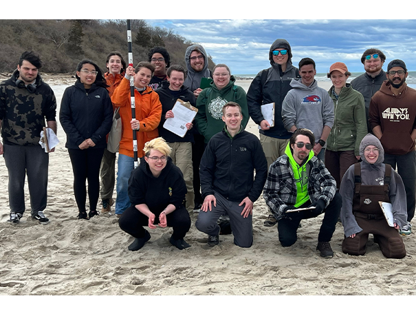
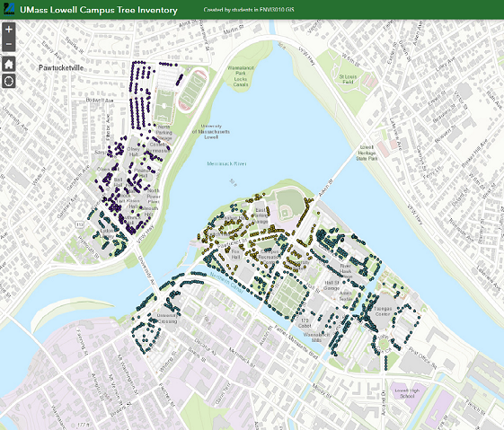
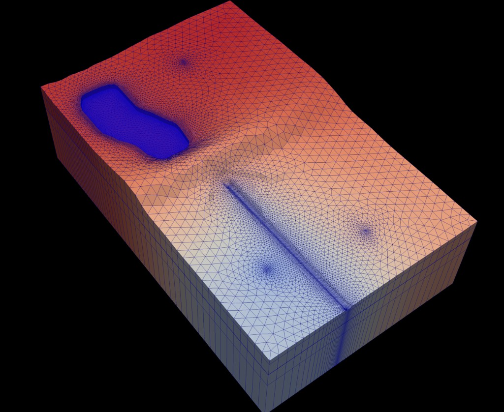
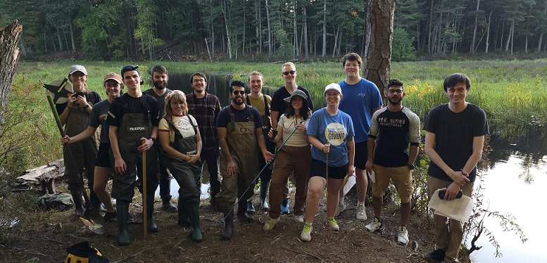

Courses taught
- GEOL3140 Hydrogeology
- ENVI3010 GIS in Earth and Environmental Sciences
- GEOL5250 Groundwater Modeling
- GEOL4260/5260 Lab and Field Methods in Hydrogeology
GEOL3140 Hydrogeology
This course explores the subsurface component of the hydrologic cycle. We cover the principles of groundwater flow, groundwater as a drinking water supply, aquifer characterization, and contaminant transport. Students walk away with the tools to answer water supply and contamination questions. The course prepares students for careers in water resources, environmental consulting, field science, and graduate study.
- Hydrogeology basics: Students learn how aquifers store water, how groundwater flows, and how wells are used to understand the subsurface.
- Real hydrogeology data: Students use slug test, well, and groundwater flow data to estimate aquifer properties and solve practical water problems.
- Water issues: We explore major water issues and explain why they matter for people and the environment.

ENVI3010 GIS in Earth and Environmental Sciences
GIS is one of the most useful skills in earth science. This is largely a hands-on course where students learn how to use ArcGIS Pro by making maps, analyzing spatial data, and collecting GPS information. Other topics include coordinate systems, raster and vector analysis, cartography, and terrain analysis.
- Mapping skills: Students learn how to use ArcGIS Pro, which is the industry leading GIS software platform.
- Collect GIS data: Students use GPS and mobile mapping tools to gather field data on campus and generate maps of their collected data.
- GIS Sand Table: Students explore how landscape terrain controls stream formation and size using a physical sand table.
- Campus tree inventory: Students build a GIS tree inventory of the UMass Lowell campus.
- Story Maps: Students learn how to build ArcGIS Story Map websites.

GEOL5250 Groundwater Modeling
Groundwater models help communities plan water supplies and evaluate underground contamination risks. This graduate course teaches students how to build, run, and explain groundwater models used in research, consulting, and water management.
- Applied skills: Students learn the basis of numerical groundwater modeling and use USGS software (MODFLOW) and solute transport models to study groundwater flow and contaminant movement.
- Activity-based: This course has a large hands-on component where students build and run groundwater simulations of real and hypothetical groundwater systems, including an aquifer with Kryptonite as a contaminant!

GEOL4260/5260 Lab and Field Methods in Hydrogeology
This course introduces students to the tools hydrologists use in the field and lab. Students learn how to collect data, keep a field notebook, measure water flow, and survey land surface and water table elevations.
- Field science: Some of the activities include: field sketching, differential leveling, water table measurements, slug tests, and stream discharge measurements.
- Lab experiments: Darcy column and Ogata-Banks experiments teach students how to measure flow, track solute movement, and interpret breakthrough curves.
